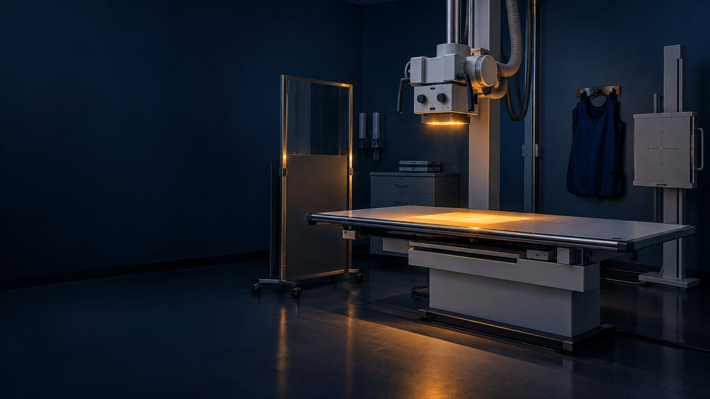
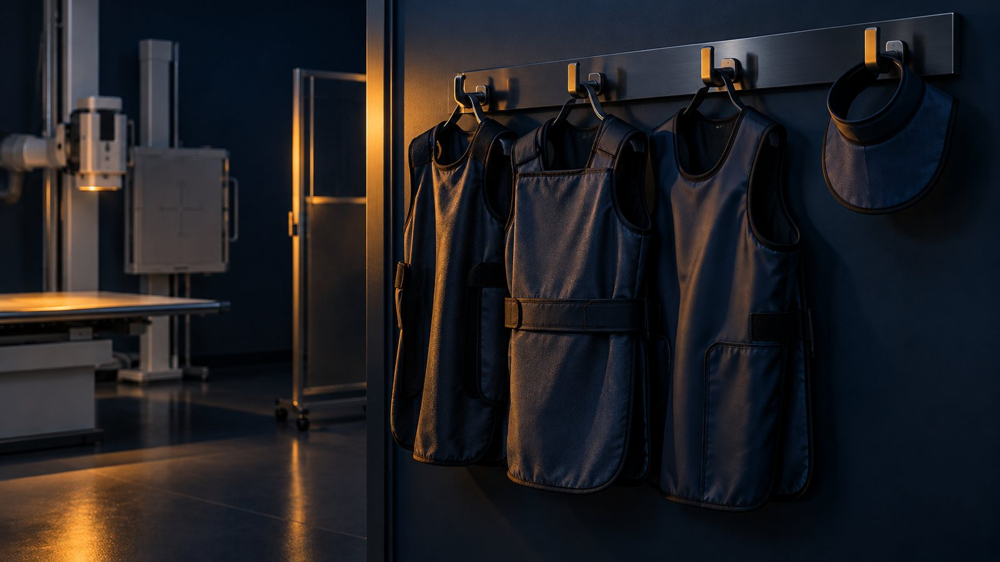
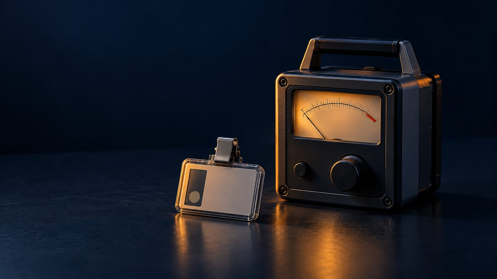

UNACHIVicerrectoría de Investigación y Posgrado
Maestría en Investigación · MI 815 Enfoque Mixto de la Investigación
Efecto de un programa de optimización de la protección radiológica en las prácticas de seguridad y la exposición ocupacional del personal de imagenología de la Clínica Princess, La Chorrera, 2027
Douglas Gerald Barsallo D.
Idea central
El límite de dosis es un techo, no una meta.
(ICRP, 2007)
Dosis bajas acumuladas elevan el riesgo de cáncer
(Richardson et al., 2023)
Antecedentes
Zheng et al. (2026)
207 tecnólogos · conocimiento → práctica
Hankin y Jones (2020)
8 intervenciones: ↑ conocimiento; ninguna midió la práctica
Kumar et al. (2021)
Protector de tiroides; luego se deteriora
Bernal Troetsch (2019)
Solo descriptivos
Cuatro vacíos, cuatro respuestas
Vacío
Respuesta
El problema
La clínica cumple los límites
Optimización sin evaluación sistemática (OIEA, 2018)
¿Cuál es el efecto del programa en las prácticas de seguridad y la exposición ocupacional del personal de imagenología de la Clínica Princess durante 2027?
Justificación
Conocimiento, protocolos y práctica
Responde a los cuatro vacíos
Programa documentado y replicable
Objetivo general
Evaluar el efecto del programa en las prácticas de seguridad y la exposición ocupacional.
la línea base
percepciones y barreras
el programa
antes, después y a los 3 meses
El cumplimiento de las prácticas es mayor después del programa.
No hay diferencia.
α = 0,05
| Indicador | Prueba | ||
|---|---|---|---|
| Hi | Prácticas | Conductas 0–15 | Modelo binomial de efectos mixtos |
| Hs1 | Conocimientos | — | Wilcoxon |
| Hs2 | Exposición | Hp(10) por 100 estudios y H*(10) | Wilcoxon |
Marco teórico
Diseño mixto de intervención

Población e instrumentos

procedimientos por medición
Análisis y ética
Temático (Braun y Clarke, 2006)
Rigor (Lincoln y Guba, 1985)
Matriz conjunta
ÉticaComité de bioética
Cronograma
Presupuesto
Incluye 10 % de imprevistos
Impacto esperado
Social y salud ocupacional
Menos exposición acumulada
Educativo
20 h de actualización
Económico
Menos repeticiones
Científico
Modelo replicable
Cumplir la norma es el punto de partida.
Optimizar es la meta.